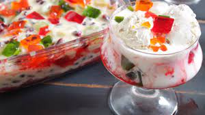

নবাবী সেমাই -
সেমাই একটি প্রকার পাকিস্তানি ডেজার্ট যা ভিন্ন ধরনের দুধ, চিনি এবং সেমাই দিয়ে তৈরি হয়।
ফালুদা -
সেমাই একটি প্রকার পাকিস্তানি ডেজার্ট যা ভিন্ন ধরনের দুধ, চিনি এবং সেমাই দিয়ে তৈরি হয়।
কাস্টার্ড -
কাস্টার্ড একটি প্রকার ডেজার্ট যা দুধ, চিনি, এগ এবং ভ্যানিলা এসেন্স দিয়ে তৈরি হয়।

ফালুদা রেসিপি জানতে এখানে চাপুন